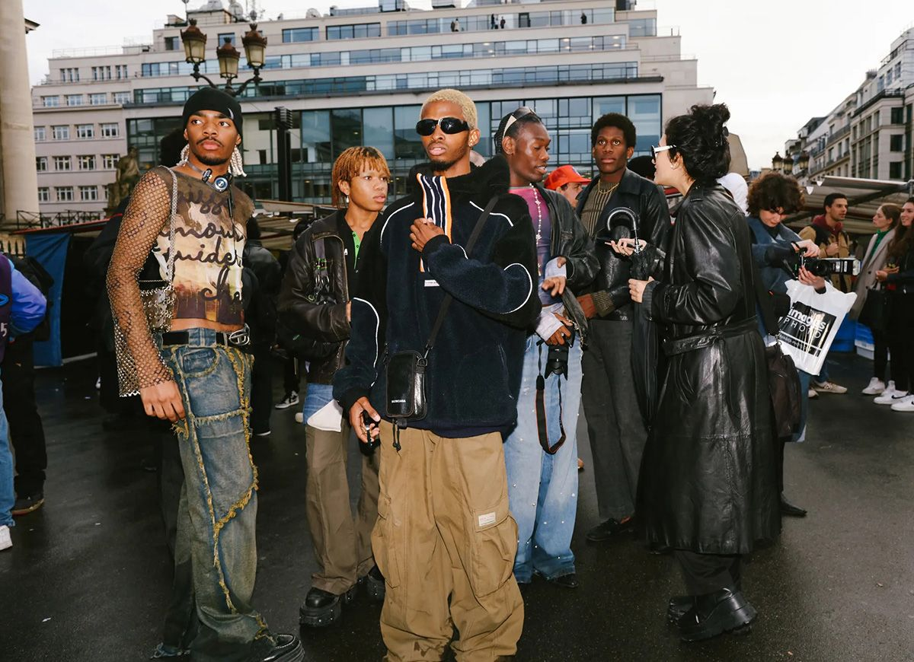
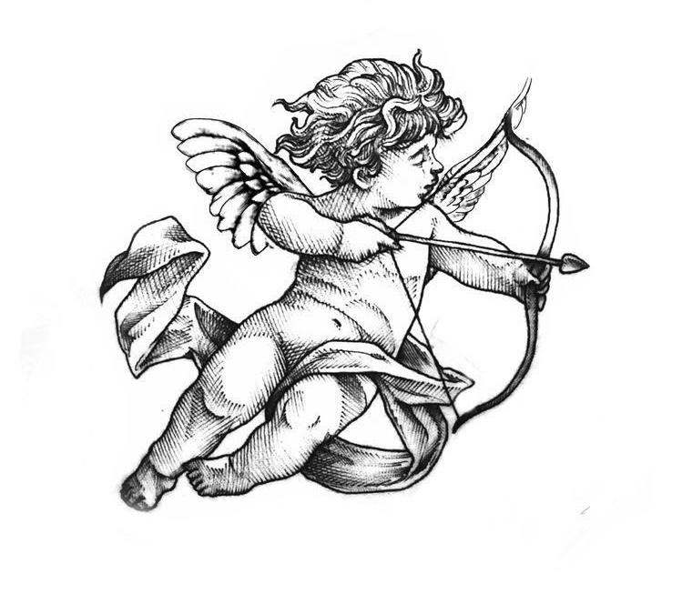

Di Streetwear, kami percaya bahwa fashion bukan hanya soal pakaian — ini adalah ekspresi diri dan gaya hidup. Terinspirasi dari budaya urban, musik hip-hop, dunia skate, dan kreativitas anak muda, kami menghadirkan koleksi yang tidak hanya stylish tapi juga nyaman.
Tentang Kami

Sejarah Kami
Streetwear muncul pada akhir 1980-an di Amerika Serikat, dipengaruhi oleh budaya skateboarding, hip-hop, dan seni jalanan. Gaya ini menjadi reaksi terhadap tren mode yang lebih formal dan terikat oleh aturan-aturan ketat.Streetwear lahir dari sebuah ide sederhana: membawa semangat jalanan ke dalam dunia fashion. kami berkembang menjadi brand yang dipercaya dan digemari oleh anak muda Indonesia.
Visi & Misi

- Visi: Menjadi ikon fashion streetwear terdepan di Asia Tenggara.
- Misi:
- Menciptakan produk dengan desain yang kreatif dan kualitas terbaik.
- Mendukung ekspresi diri anak muda melalui fashion.
- Membangun komunitas yang solid dan inklusif.
Mengapa Memilih Kami?
Kami tidak hanya menjual pakaian, kami menawarkan identitas. Setiap produk kami dirancang untuk mencerminkan gaya hidup aktif, kreatif, dan berani tampil beda. Mulai dari hoodie oversized, kaos grafis, hingga sneakers kekinian — semua terinspirasi dari jalanan.